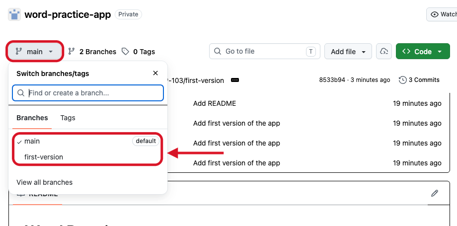
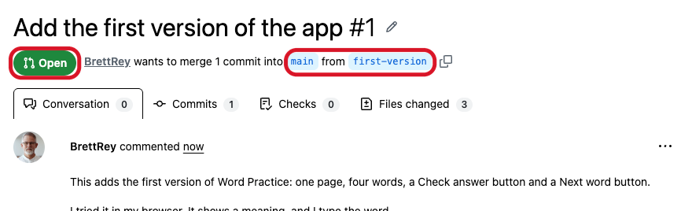
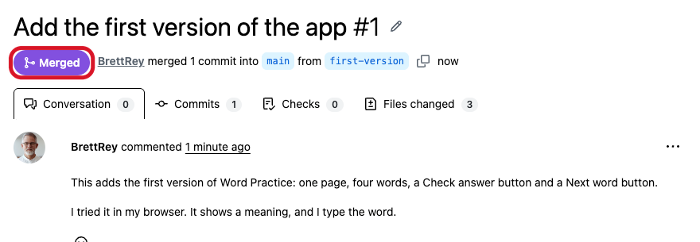
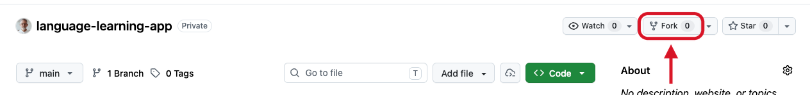
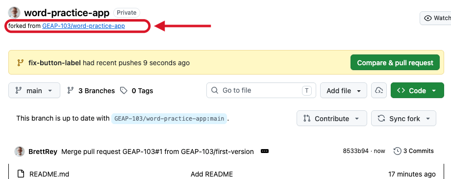
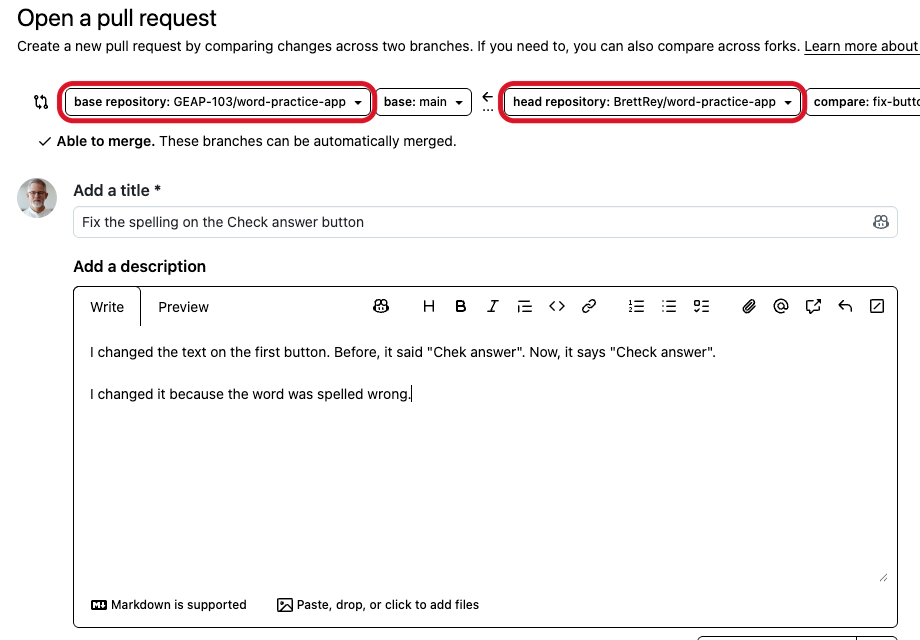
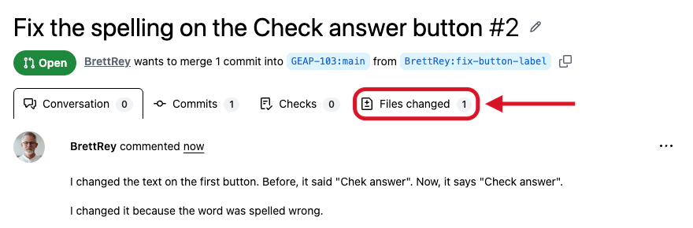
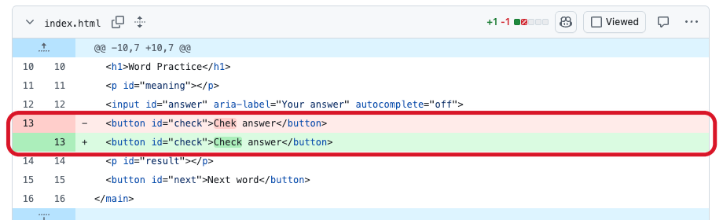
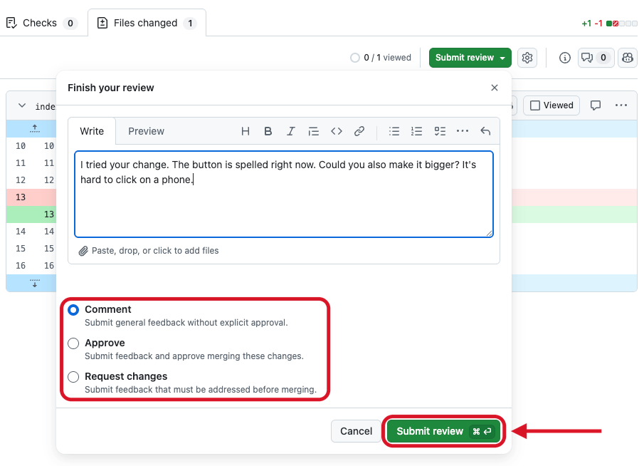
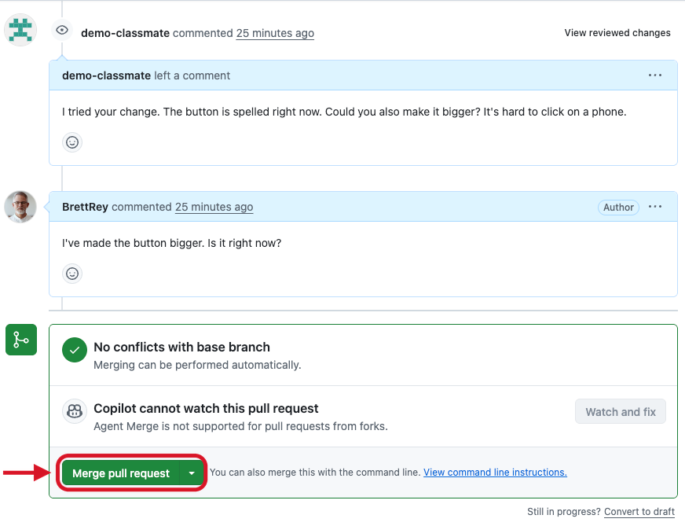

Do these at home
Check: you're in our class group when github.com/GEAP-103 shows event-template. An empty page means you aren't in yet, or you aren't signed in. Stuck? Ask Copilot to explain, and bring your question to class.
A pull request to yourself
Copilot often builds your app on a separate branch. Then main, the main version on GitHub, shows only a README.
Check: your app's files are on main. No app? A grey button? An error? Stop there, and show Brett in class.
Step 1 on GitHub

Click the branch menu.
This repository has two branches: main and first-version.
main is the branch GitHub shows first. Check that your app is there.
Step 1 on GitHub


It asks to merge first-version into main.
Open means the pull request is waiting.
Merged means the change is now in main.
The homework ends
That's the homework.
The next slides are for a later class. You don't need them yet.
Some links in them won't open until you've joined our class group on GitHub.
GEAP 103 · Forks and pull requests
You want to add something to a classmate's project on GitHub.
You can't change their repository. Only the owner can.
So you make your own copy, change your copy, and ask the owner to take your change.
GEAP 103 · Forks and pull requests
We call it the upstream repository.
4 ReviewThe owner reads your change and writes a comment.
5 MergeThe owner adds your change to their repository.
1 Fork→You copy the repository.
3 Pull request←You ask the owner to take your change.
Your own copy, on GitHub.
2 CommitYou change your copy and record the change as a version.
GEAP 103 · Forks and pull requests
GEAP 103 · Forks and pull requests
GEAP 103 · Forks and pull requests
You, in someone else's project.
You, in your own project.
You'll be both.
Everyday AI Benchmarks
A benchmark is a set of tests for AIs. Every AI gets the same tests, so we can compare them. Each of us makes one test. We call it an event.
Too easy? If every AI gets the top score, make your event harder. Ideas: a word game for two AIs. A game from your country. Which AI understands your accent? Which AI says "I don't know"?
Your own repository in GEAP-103
Check: your repository's address starts with github.com/GEAP-103/ Example: github.com/GEAP-103/taboo-league
A pull request to Brett
Check: your pull request says Merged, and your event is in the events folder. Don't wait. Start Step 4.
You're the contributor
Step 4 on GitHub


Click Fork at the top of the owner's repository.
Your fork has the same name. Under the name, it says forked from and the owner's repository.
After you push, your fork shows Compare & pull request.
Step 4 on GitHub

base repository: the owner's. Your change goes there.
head repository: your fork. Your change comes from there.
Write a title and a description. Then click Create pull request.
You're the owner
It's your event. You can say no. Give your reason.
Step 5 on GitHub


Click Files changed.
Red is the old line. Green is the new line.
Here, one line changed: "Chek" is now "Check".
Step 5 on GitHub

Write your comment.
Choose Comment, Approve, or Request changes. Then click Submit review.
On your own pull request, you can only choose Comment.
Step 5 on GitHub

The owner comments. Here, the owner asks for one more change.
The contributor replies.
When the owner is happy with the change, the owner clicks Merge pull request.
GEAP 103 · Forks and pull requests
I tested in your event. The score was .
One thing went wrong: .
Your result follows the rules. I'm merging it.
In rule , you . Could you run it again?
I ran it again. Now .
I didn't change because .
Brett will ask you